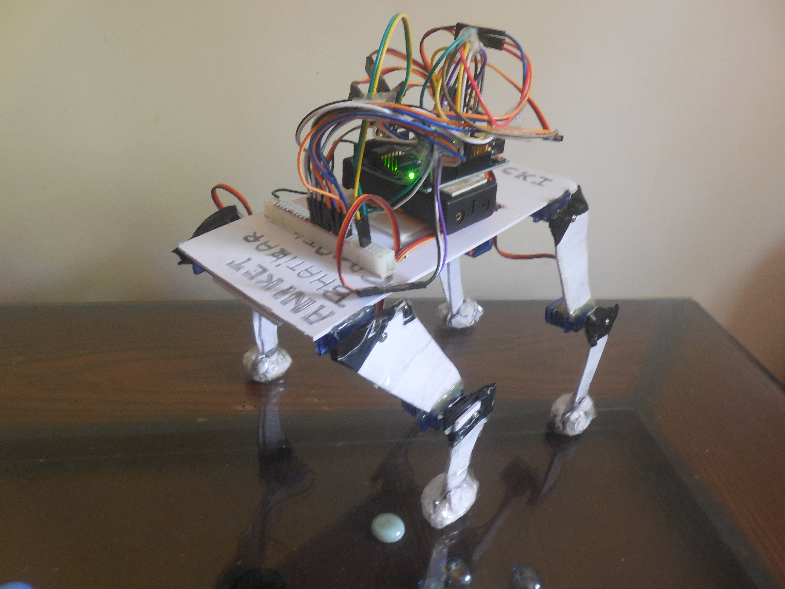
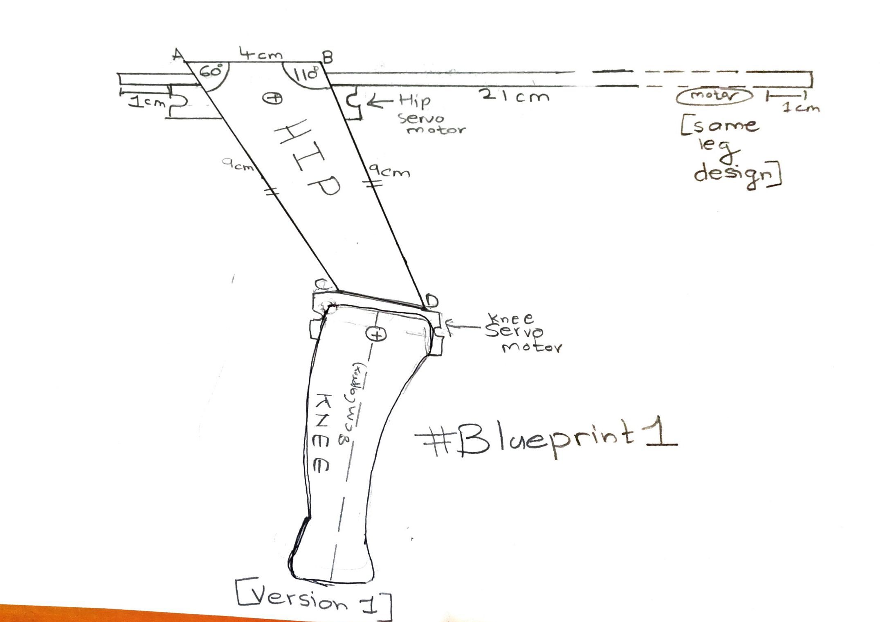
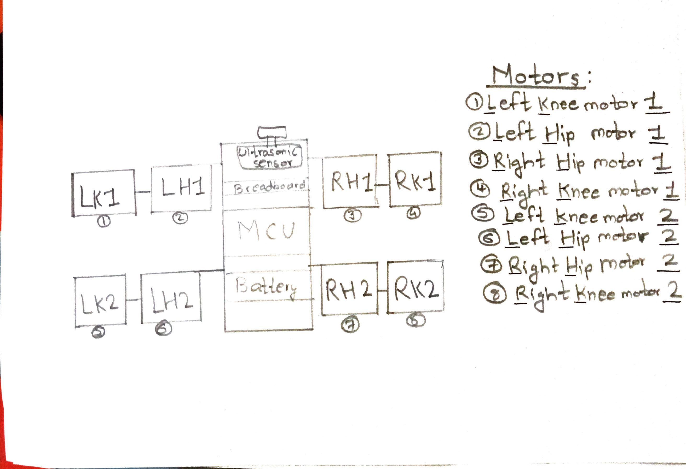
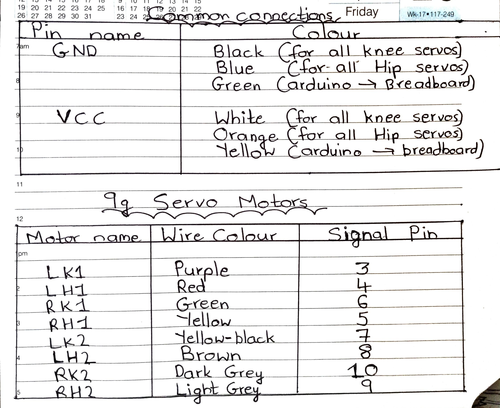
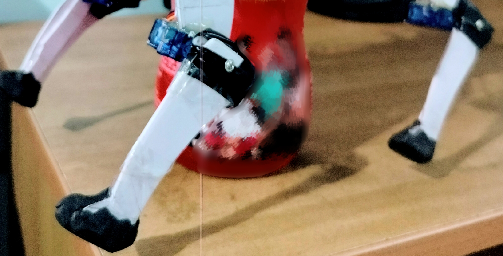
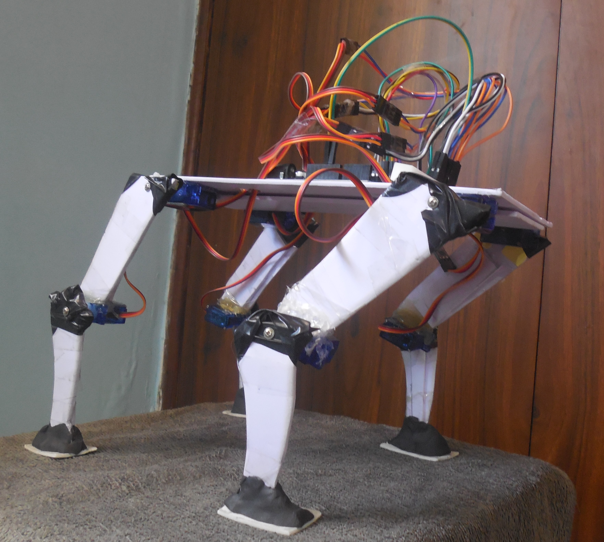
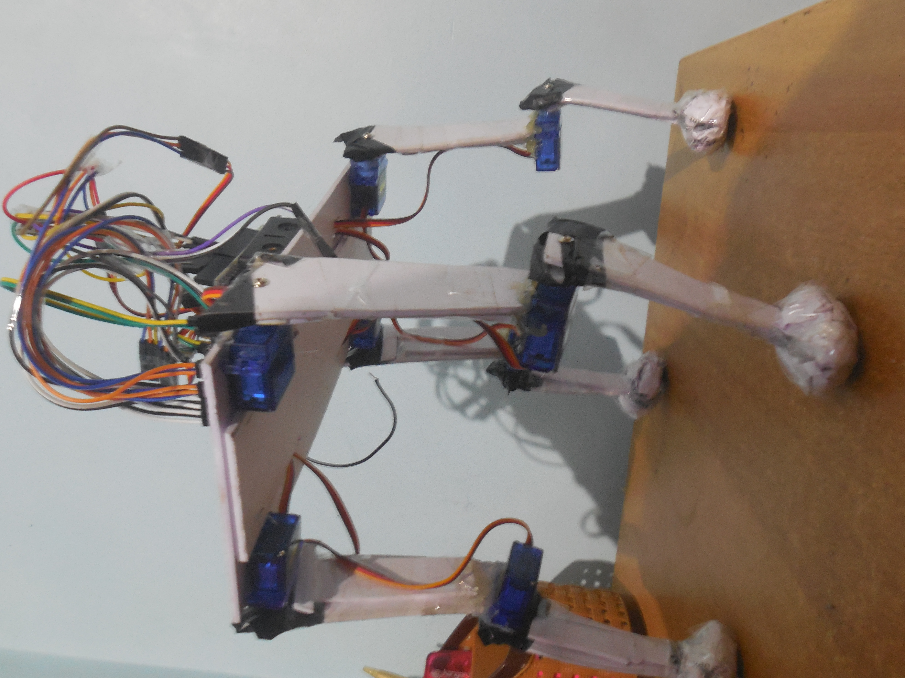
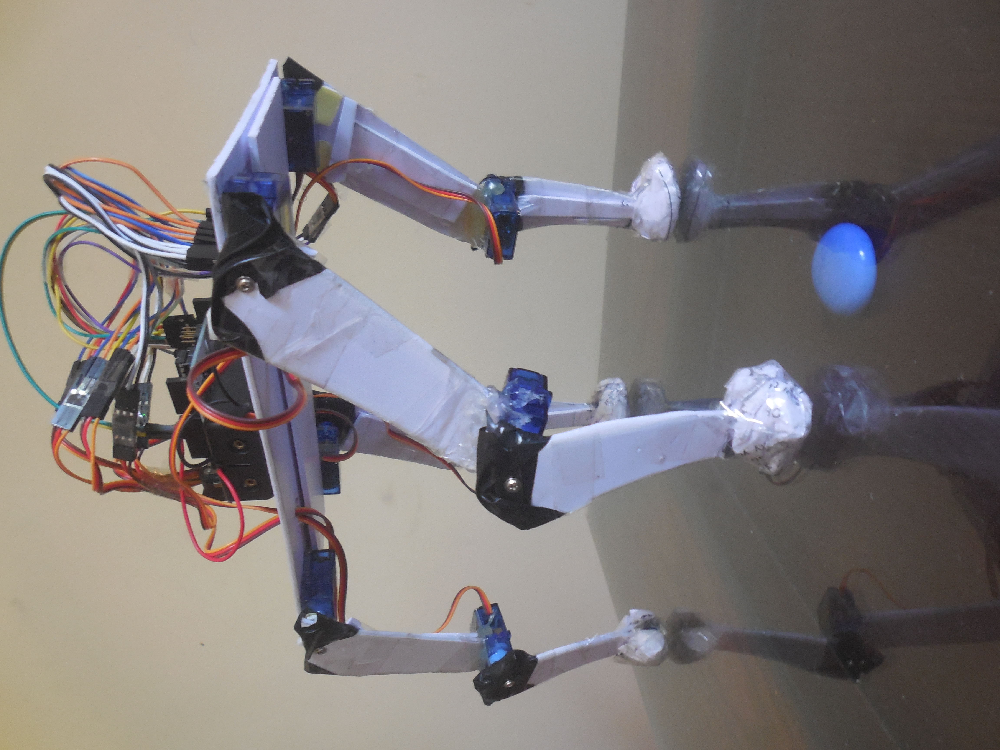
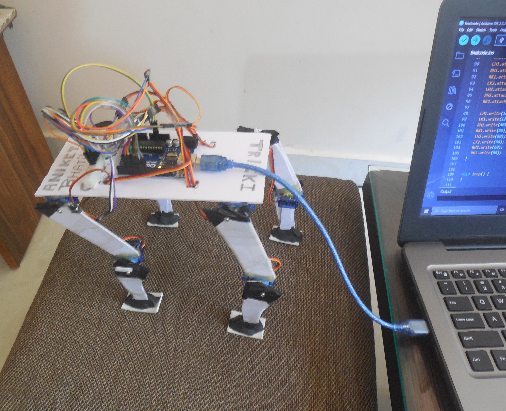
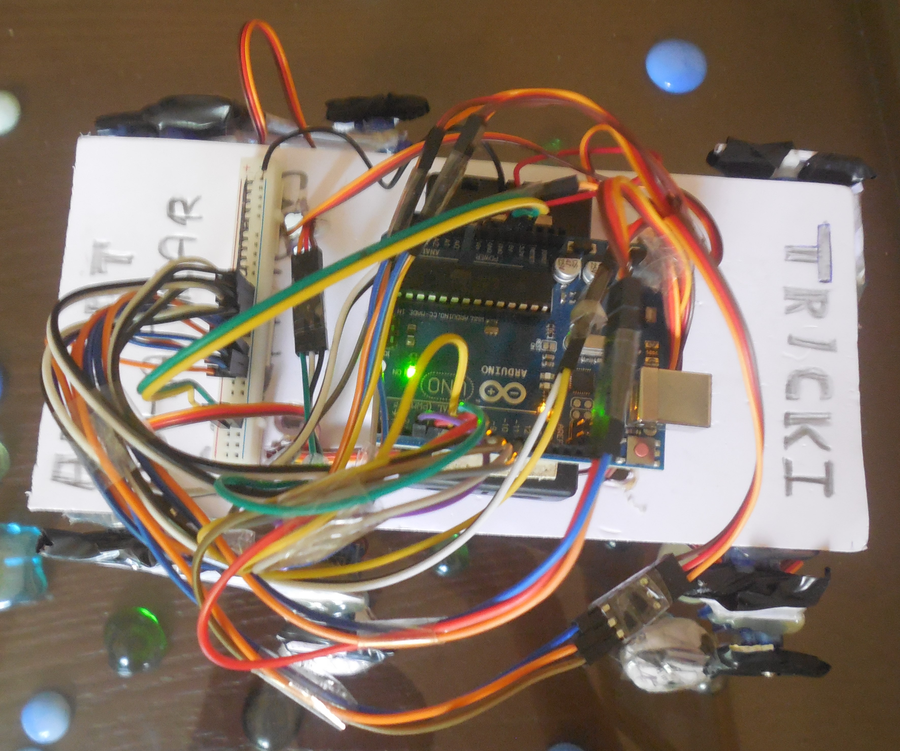

Building Tricki: My Journey to Creating a Robot Dog

Introduction
Exploring robotic dogs on the internet, especially the one built by IITians from IIT Kanpur, sparked my
fascination with robots. After finishing my 10th board exams on April 15, 2024, I decided to turn my
idea of building a robot dog into a reality. Drawing from my experience at FTC India 2023, I embarked on
this project with the goal of learning about quadruped robots and the challenges they pose.
Experiment-based learning fuels my creativity and innovation, and I hope it does the same for you!

Design and Construction
Gathering the Materials: Choosing materials for the chassis was my first challenge. Since I
didn't have access to a 3-D printer, I opted for a more accessible approach using Arduino UNO and a 2mm
foam board. This decision helped me get started quickly without the need for specialized equipment.
Constructing a Leg Model:To minimize risks, I began by creating a working model of a
quadruped leg. Positioning the servo motors was tricky, but after careful observation and coding, I
successfully replicated the movement of a real dog's leg!! I named my dog 'Tricki', as the task was a
bit
difficult and tricky. (chosen from Triumph of Surgery lesson, class 10th English Supplementary Reader)
Here is a sketch of Tricki's leg design:

Here is the movement of the leg:
Deciding the Tasks of the Robot: I outlined basic functions such as walking forward,
sitting, and standing, and incorporated an ultrasonic sensor for collision avoidance. Coding these
functionalities was a rewarding step towards completing Tricki's design.
Completing the Design: With the leg model perfected, I duplicated it to create the
remaining legs and crafted the body using foam board. The body was a rectangle of 21 cm*10 cm. Ensuring
uniform gravitational distribution was crucial for stability.
A visual of complete structure:

Wiring
Mapping out the wiring connections was a meticulous process, but it helped prevent errors later on. I
labelled each servo and carefully selected and connected the wires to ensure proper functionality. I
named each servo as LH1, LK1, LH2, LK2, RH1, RK1, RH2 and RK2. R, L, H and K means Right, Left, Hip and
Knee. 1 indicates front legs while 2 indicates hind legs.
Placement of motors:

Only male-to-male jumper wires were needed. From my wire box, I filtered out male-to-male ones. I
decided on the black and blue wires for Ground and white and orange for VCC. I used a strip of
breadboard to supply power to the servos. Initially, I hadn't decided on the placement and type of
battery to use, which became one of my mistakes.
This is the breakdown for the connections of the wires :

Programming
Coding was a significant milestone, with careful consideration given to replicating the movement of a
real dog's legs. Each servo required unique angles for lifelike motion, which I adjusted accordingly in
the code.
Link to the github repository:
Mission Tricki
Improvements
Adding Grip to the Legs: After noticing a lack of stability, I decided to enhance Tricki's
footing by adding clay to the paws. This simple solution provided better traction and improved Tricki's
ability to stand and move confidently.

Preventing Leg Sticking: Another issue I encountered was the legs getting stuck on the
ground, hindering smooth movement. To address this, I applied double-sided tape to the feet, ensuring
that Tricki's legs moved freely without any obstructions.

Optimizing Paw Stability:
While the clay cum double tape solution initially improved Tricki's grip, it proved to be less stable
over time, often bending and compromising its performance. To address this issue, I replaced the
makeshift paws with paper balls, which provided a more reliable and durable solution.

Testing
Although initial testing showed promise, unexpected issues arose, causing Tricki to reset and fall.
Despite this setback, the testing phase provided valuable insights for future improvements.
Sitting Position:

Stance Position:

Walking test:
I tried many ways, but Tricki couldn't make its first walk :(
Supported 1st walk...:
Future Plans
Moving forward, I aim to enhance Tricki's capabilities by incorporating obstacle avoidance using the
ultrasonic sensor and adding a playful feature with an 8x8 LED Matrix Display.
Learnings
Reflecting on this project, I've learned the importance of complete planning and design before
construction. Sketching, decision-making, and finalizing details beforehand can save time and resources
in the long run. Moreover, the experience has deepened my understanding of quadruped robots and
robotics.
Reflecting on my experience with Tricki, I've learned the importance of considering power supply
options early in the project planning phase. Delaying the placement of the battery resulted in increased
weight and decreased performance. In future projects, I'll prioritize addressing power requirements from
the outset to optimize performance and efficiency.
Additionally, I discovered that foam board, while accessible and easy to work with initially,
may not be the most suitable material for certain robotics projects. Its tendency to bend over time
impacted Tricki's stability and longevity. Moving forward, I'll explore alternative materials
such as
3-D prints that offer greater durability and structural integrity.
Some more Visuals

[Failure :(]

Conclusion
Building Tricki has been an exciting journey of exploration and discovery. Exploring the mechanism of a
quadruped robot was a fascinating one! For now, I'll pause the project the resume it in the upcoming
years.
Never Stop Exploring!!!
~Aniket Sushant Bhatikar
Date: 2 May 2024